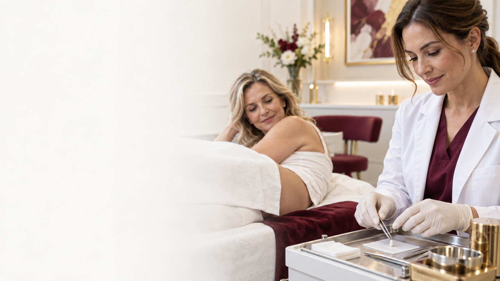

Tratamiento hormonal personalizado · Desde los 40 años
Chip hormonal
Pellet subdérmico
Una indicación médica diseñada según tu etapa, tus estudios y las necesidades reales de tu organismo.
Solicitar una evaluación
Atención presencial · Córdoba Capital
Atención exclusivamente particular. No trabajamos con obras sociales, prepagas ni mutuales.
Pequeño, subdérmico y personalizado
No existe un único chip para todas las personas
El pellet es un implante muy pequeño que se coloca debajo de la piel, habitualmente en la zona de la cadera o el glúteo. Su función es liberar de manera sostenida la formulación hormonal indicada por la médica.
La Dra. Quesada determina el principio activo, la dosis y el tiempo estimado de acción después de conocer tus síntomas, antecedentes y resultados de laboratorio.
Una mirada integral
¿Qué objetivos pueden evaluarse?
Cuando existe una indicación hormonal confirmada, el tratamiento puede orientarse a distintos aspectos del bienestar.
Energía y vitalidad
Evaluación de cansancio persistente, baja energía y cambios en la recuperación cotidiana.
Etapa hormonal
Abordaje médico de síntomas asociados a menopausia, climaterio o andropausia.
Bienestar sexual
La libido y la función sexual se consideran dentro de una evaluación clínica completa.
Sueño y estado de ánimo
Se estudian cambios del descanso, concentración, irritabilidad y bienestar general.
Fuerza y recuperación
Puede evaluarse su relación con masa muscular, fuerza y recuperación física.
Composición corporal
Puede acompañar el control de peso y grasa corporal cuando forma parte de un plan médico integral.
Los beneficios no son iguales para todas las personas y no pueden garantizarse. Dependen del diagnóstico, la formulación indicada y la respuesta individual.
Seguridad en cada etapa
Un proceso médico, de principio a fin
- 1
Consulta presencial
La Dra. escucha tus síntomas, revisa antecedentes y define si corresponde avanzar.
- 2
Estudios de laboratorio
Los análisis permiten conocer tus niveles hormonales y evaluar contraindicaciones.
- 3
Receta personalizada
Si existe indicación, la Dra. define la formulación y emite la receta profesional firmada.
- 4
Laboratorio autorizado
El pellet se prepara únicamente contra receta y acreditación de la matrícula médica de la Dra. Quesada.
- 5
Colocación subdérmica
Procedimiento ambulatorio, presencial y con anestesia local, en cadera o glúteo según evaluación.
- 6
Seguimiento médico
La Dra. controla la evolución, solicita los controles necesarios y acompaña la respuesta al tratamiento.
Colocación ambulatoria
Un procedimiento pequeño, con cuidados precisos
La colocación se realiza con anestesia local. El pellet queda debajo de la piel y la zona se protege con un pequeño apósito. La Dra. explica los cuidados posteriores y cuándo retomar cada actividad.
Referencia de tamaño
Similar a un grano de arroz.
Respuestas claras
Preguntas frecuentes
La consulta es el espacio para resolver tus dudas y conocer las alternativas posibles para tu caso.
¿Es doloroso?
La colocación se realiza con anestesia local y suele ser rápida y bien tolerada. Puede presentarse una leve molestia o sensibilidad en la zona durante las horas posteriores. La Dra. indica los cuidados necesarios después del procedimiento.
¿Es para todas las personas mayores de 40 años?
No. Se ofrece a mujeres y hombres desde los 40 años que, después de una evaluación clínica y de laboratorio, tengan una indicación médica concreta.
¿Qué contiene el pellet?
No tiene una composición única. La Dra. define qué hormona o formulación corresponde y en qué dosis, de acuerdo con los estudios, los antecedentes y el objetivo terapéutico.
¿Cuánto dura?
El efecto puede extenderse aproximadamente entre 6 meses y 1 año. El tiempo real depende de la formulación indicada, el metabolismo y la respuesta individual.
¿Quién prepara y coloca el pellet?
Se solicita a un laboratorio autorizado mediante receta firmada y acreditación de la matrícula profesional. La colocación la realiza la Dra. Quesada de forma presencial en su consultorio.
¿Necesita controles posteriores?
Sí. El seguimiento permite valorar la evolución clínica y realizar los controles que la Dra. considere necesarios.
Consultorio presencial
Córdoba Capital
La evaluación, la colocación y el seguimiento se realizan de manera particular en el consultorio de la Dra. Quesada.
Pedir un turno por WhatsApp
Conocé a la Dra., el consultorio y el mapa →
Sin obras sociales, prepagas ni mutuales.
Tu tratamiento empieza con una evaluación